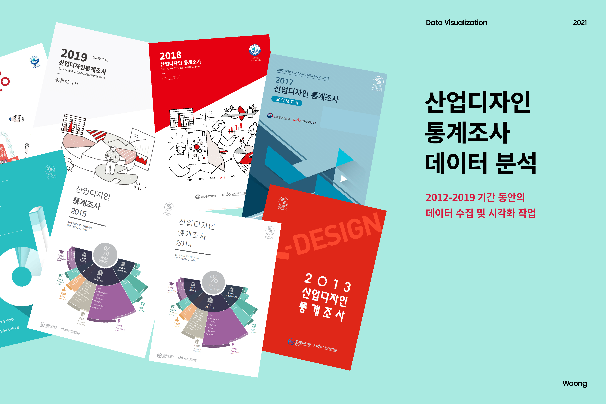
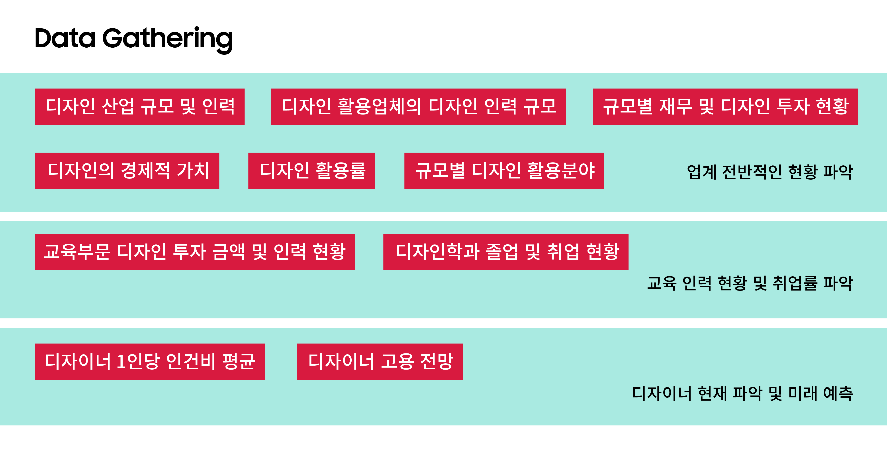
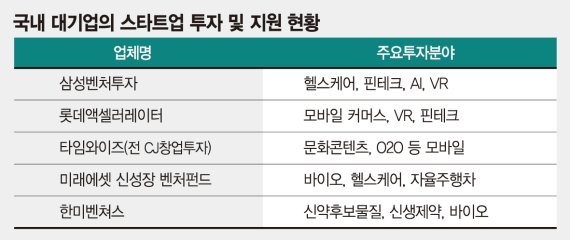
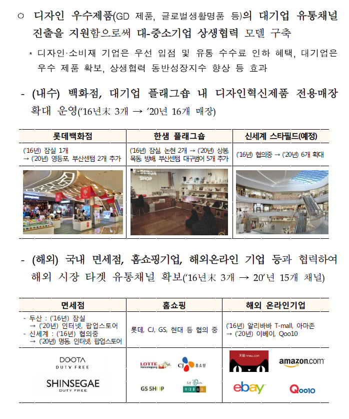
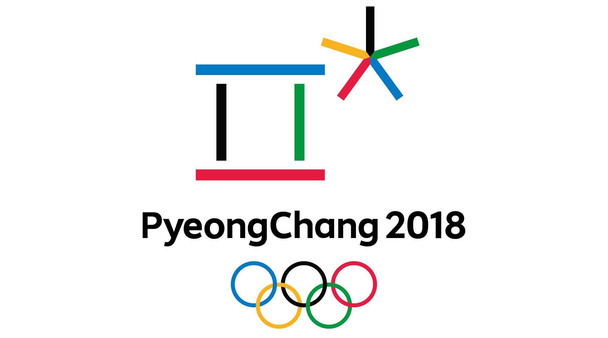
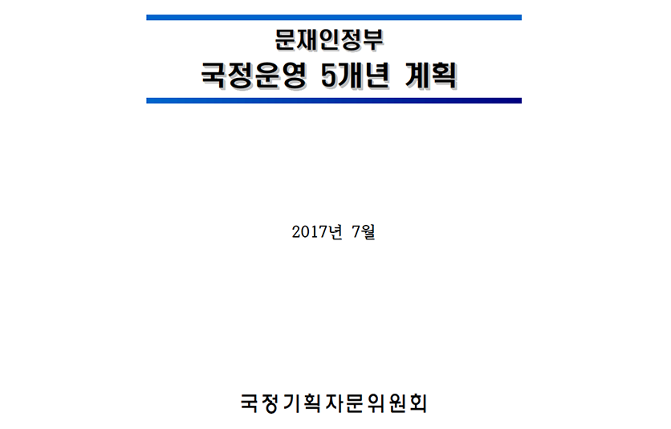

출처 : 한국디자인진흥원 [산업디자인통계조사]
주석 : 2012년부터 디자인활용기업은 디자인산업특수분류체계를 기준으로 조사 됨

한국디자인진흥원에서 2012년부터 매년 발행하는 산업디자인통계조사는 디자인활용업체, 디자인전문업체,
중앙부처 등 국내 디자인 통계 중 가장 폭넓은 표본조사를 진행한 조사 결과로 신뢰할 수 있는 정보를 가지고 있다.
본 프로젝트에서는 2012년부터 2019년까지 발행된 산업디자인통계조사 데이터를 바탕으로 주요 디자인 업계의 이슈를
데이터 시각화를 통해 알아보았다.

산업디자인통계조사 중 본 프로젝트에서는 다음 10개의 주요 통계데이터를 활용하였다. 데이터수집 기준은
업계 전반적인 현황을 파악할 수 있는지, 교육 인력 및 현황을 파악할 수 있는지, 디자이너의 현재와 미래 예측이
가능한 데이터인지를 기준으로 선정하였으며 2012년부터 2019년까지 데이터 소실이 없이 꾸준히 기록되어 있는 데이터를
기준으로 하였다. 2019년 통계자료가 가장 최신 자료이며 추후 2020년, 2021년 자료가 업데이트된다면 본 데이터에 추가할
수 있을 것으로 보인다.
01. 디자인산업규모 및 인력
디자인산업 규모 및 인력은 2012년부터 2019년까지 꾸준히 우상향으로 성장했다. 2012년 약 13조 규모의 시장은
2019년 18조 규모 이상으로 성장하였다. 디자인 인력 또한 26만명의 규모에서 33만명 규모로 약 1.3배 성장했다.
특히 2012~17년 구간이 가장 가파르게 성장한 것을 확인할 수 있다.
02. 디자인 활용업체의 디자인 산업규모
디자인 활용업체의 디자인 산업규모 데이터를 살펴보면 2016년에 중기업의 산업규모가 전년대비 145.7%나 증가했다.
중기업의 산업규모가 증가한 대신 대기업의 디자인 산업규모는 무료 52.4%나 감소하였는데 이는 대기업 내부의
디자인 투자를 줄이고 중기업의 투자가 늘어났기 때문으로 추정된다.
대기업, CVC 만들어 스타트업 직접 키운다
파이낸셜뉴스입력 2016.07.05 18:01수정 2016.07.05 18:01

2016년 7월 파이낸설뉴스에 따르면 통상 자체 연구개발(R&D)이나 인재영입, 간접적인 지분투자 형태로 신사업을
확대해 온 대기업들이 최근 기업형 벤처캐피털(CVC, Corporate Venture Capital) 직접 설립해 자기 사업에 도움이
될만한 스타트업을 직접 발굴해 투자하는 사례가 늘고 있다고 한다.
CVC란, 외부 출자자를 별도로 모집하지 않고 기업이 직접 투자회사를 설립하는 것으로, 삼성벤처투자가 대표적이다.
2016년 신기술금융사의 자본금 요건이 기존 200억원에서 100억원 수준으로 완화되면서, 스타트업 투자를 통해
신성장동력을 확보하려는 움직임이 활발해졌다고 한다.
이는 2015년 전국창조경제혁신센터 출범 당시 전담 기업 수준에 머물렀던 국내 대기업이 스타트업 DNA를 직간접적으로
경험하며 나타난 변화로 풀이된다.
산업통상자원부 디자인혁신전략 자료 (2016.8.29)

또한, 산업통상자원부가 발표한 디자인혁신전략 자료에 따르면 대기업 유통망을 활용하여 적극적으로 대기업-중소기업의
상생을 위해 많은 노력을 단행했다는 것을 알 수 있다. 그 결과 대기업의 투자 금액이 중기업으로 유입되어 2016년 대기업-중기업의
그래프 변화가 있었던 것으로 추정된다. 하지만 소기업의 경우 워낙 많은 회사들이 있어 대기업이 직접적으로 투자한 기업이 많지
않았을 것이므로 전체 산업에 미치는 영향은 미비했을 것이다.
03. 교육부문 디자인 투자 금액 및 인력 현황
교육부문에서 디자인교수의 연봉은 꾸준히 상승하였다. 하지만 4년제 대학교의 디자인 교수와 부/조교수간의 간극이 매우 큰 것을
확인할 수 있었다. 정교수의 연봉은 2012년 6400만원대에서 2019년 8600만원대까지 상승하였으나, 부/조교수의 연봉은 거의 변동이
없었으며, 특히 전임강사의 대우는 2019년에도 여전히 각박한 것으로 나타났다.
04. 디자인학과 졸업 및 취업 현황
디자인학과 졸업 및 취업 현황을 살펴보면 졸업자 수가 늘어나다가 2017년부터 점점 줄어드는 경우를 확인할 수 있다.
취업률은 전반적으로 50~60프로대를 유지하고 있다.
디자인학과의 졸업 현황 그래프에서 점진적으로 졸업자수가 줄어드는 것은 전체 대학생 수가 줄어드는 현상과
맥락을 같이 한다. 아래 그래프의 유형별 고등교육기관 재적학생 수를 보면 일반대학, 전문대학, 기타대학, 대학원
가릴 것 없이 모두 점진적으로 학생 수가 줄고 있다는 것을 확인할 수 있다.
05. 디자이너 1인당 인건비 투자
디자이너 1인당 인건비 투자는 대기업과 소/중기업의 차이가 5~10배의 차이가 있다. 그래프를 보면 2016년에 급격하게 대기업의 투자가 줄었다.
2016년의 대기업 인건비 투자가 줄은 이유는 기존 채용 인력만으로 충분히 업무가 가능한 부분이 있고, 그 외는 중소기업과의 상생
등으로 비용을 감축했기 때문으로 추정된다. 2016년 이전에는 에이전시 등에서 대기업으로 이직하는 케이스가 잦았으나, 2016년 이후에는
대기업에서 채용 인원을 줄이면서 그런 케이스가 많이 줄어들었다.
06. 규모별 디자인 활용분야
디자인 분야별 디자인 활용률에 대해서 연간비교 데이터를 시각화로 표현하였다. 디자인 분야는
전통적인 강자였던 시각디자인 분야와 최근에 대두되고 있는 서비스/경험디자인, 그리고 과거에
유망한 분야였던 디지털/멀티미디어 디자인/콘텐츠 디자인, 공간/환경 디자인 이렇게 네 가지
카테고리로 분석해 보았다.
06. 디자인 분야 디자인 활용 연간 비교
데이터 시각화로 구현해보니, 전통적으로 강세였던 시각디자인 분야와 디지털/멀티미디어 디자인/콘텐츠 디자인
분야는 꾸준히 하락세를 보였다. 특히 디지털/멀티미디어 디자인/콘텐츠 디자인 분야는 2019년 5프로 미만대로
떨어지면서 거의 현재는 디자인 투자가 잘 이루어지지 않는다는 것을 파악할 수 있다.
반면에 IT 업계가 급부상하면서 서비스/경험디자인의 강세가 두드러진다. 이 분야는 UX분야가 속해 있으며
시각디자인의 일부 영역이 이 분야로 넘어온 것으로 보인다. 2012년 8.6%의 점유율이었던 서비스/경험디자인은
2018년 19.87%로 최고치를 기록했다가 2019년에 17.15%로 소폭 낮아졌다.
06-1. 규모별 디자인 활용분야: 시각디자인
규모별 디자인 활용분야 중 시각디자인 분야는 전체 산업에서 점점 활용률이 떨어지는 것을 확인할 수 있었다.
하지만 2018년에 대기업 카테고리에서 61.01%의 사용률을 잠시 보여준 적이 있는데, 이는 평창동계올림픽과 월드컵, 아시안게임 등
스포츠 빅이벤트의 영향이 컷던 것으로 보인다. 제일기획 매거진에 따르면 2018년 광고 시장 규모는 전년 대비 4.6% 성장한 11조 7,020억 원을 기록했다.
특히 2018년은 디지털 광고비가 전년 대비 14.4% 성장, 최초로 방송 광고비를 역전하면서 매체 광고 시장의 지각 변동을 예고했다.
이러한 광고 시장의 변화가 시각디자인의 대기업 활용을 이끌었다고 판단된다.

2018년은 평창올림픽이 있던 시기였다. 따라서 대기업의 시각디자인 투자가 크게 일어났을 것으로 추정된다.
06-2. 규모별 디자인 활용분야: 서비스/경험디자인
서비스/경험디자인은 2015년부터 급성장하기 시작하여 2016년에 대기업 활용이 24.31%로 높은 수치를 보였다가
2019년에 41.69%로 최고치를 경신했다. 이는 2010년대 중반에 IT 업계의 호황과 더불어 UX디자인의 중요성이
매우 커졌기 때문으로 추정된다. 2017-2018년의 대기업의 서비스/경험디자인 활용은 주춤하였으나, 중소기업과의
활용이 매우 커졌고, 이는 스타트업 붐과도 무관하지 않다. 2019년에 다시 대기업의 서비스/경험디자인 투자가
늘어난 것은 4차산업 시대가 도래하면서 CES 2017/18에서 발표된 인공지능 비서부터 2019년 사물인터넷, 스마트홈,
로봇공학, 블록체인, 빅데이터 분석 등 다양한 IT 기술들이 쏟아지기 시작하면서인 것으로 추정된다.
06-3. 규모별 디자인 활용분야: 디지털/멀티미디어 디자인/콘텐츠 디자인
전통적인 강세였던 디지털/멀티미디어 디자인/콘텐츠 디자인 영역의 경우 꾸준히 디자인 활용률이 하락세를
보이면서 2019년에는 전 규모에서 10프로 미만의 활용률을 보였다. 해당 분야는 진입장벽이 낮아지고
특히 AI 기술로 대체 가능한 분야로 인식되면서 신규 디자인 활용 투자는 점점 더 줄어들 것으로 예상된다.
06-4. 규모별 디자인 활용분야: 공간/환경 디자인
공간/환경 디자인 영역은 2017년에 유의미한 데이터를 발견하여 자료에 추가하였다. 2017년 대기업의
공간/환경 디자인의 디자인 활용이 전년 대비 3배 이상 뛰었다가 다시 2018년에 절반으로 줄은 것을
확인할 수 있었다. 이는 문재인 정부가 출범하면서 촛불시민혁명으로 탄생한 정부인 만큼 다양한
사회 인프라를 확충하기 위해 노력했기 때문으로 추정된다.
문재인정부 국정운영 5개년 계획에 따르면 사회서비스 공공인프라 구축 (복지부),
국가기간교통망 공공성 강화 및 국토교통산업 경쟁력 강화 (국토부),
전 지역이 고르게 잘사는 국가균형발전 (산업부ㆍ행자부ㆍ국토부) 등
다양한 정책을 기획하고 실행하였다. 이러한 기조로 공간/환경 디자인의
대기업 투자가 크게 늘어났을 것으로 예상된다.

07. 디자인 활용률
전체산업 기준, 디자인특수분류 기준 디자인 활용률은 모두 점진적으로 성장하였다. 전체산업 기준 2012년 디자인 활용률은
13.9%였으나 2019년에는 17.2%까지 성장하였다. 디자인특수분류 기준 디자인 활용률은 2012년 기준 26.6%에서 2019년 기준
37.1%까지 성장하였다.
08. 디자인의 경제적 가치
01에서 확인한 디자인 산업의 성장과 더불어 디자인의 경제적 가치 또한 엄청난 성장을 이루었다.
2012년 약 69조원의 가치를 지녔던 디자인 산업은 2019년에는 128조원의 경제적 가치를 지녔다.
디자인 산업군은 실제 1.3배 시장이 커졌으나, 경제적 가치는 약 1.8배 이상의 차이를 보였다.
이는 사회가 디자인의 가치를 바라보는 인식이 그만큼 더 커졌다고 판단할 수 있다.
09. 디자인 활용업체 비율 추이
디자인 활용업체 비율 추이 또한 다른 지표와 마찬가지로 전체산업 기준, 디자인 특수분류 기준 모두
고르게 성장하였다. 하지만 디자인 특수분류 기준 디자인 활용업체 비율이 2019년에도 50프로가 넘지
않는다는 점이 의외인 부분이었다.
10. 디자이너 고용 전망
디자이너 고용 전망은 전년대비 같으면 100%, 증가하면 100%이상, 감소하면 그 이하로 나타난다.
디자이너 고용 전망은 2015년에 소폭 감소하였으나, 그 이후로는 회복하여 큰 차이가 없는 것으로 나타났다.
2020년, 2021년 디자이너 고용 전망은 예년과 크게 다르지 않을 것으로 예상되었으나, 현재 그래프는
코로나 시국을 반영하지 않은 지표이므로, 코로나 특수 상황의 데이터를 추가하면 다른 결과가 나올 것으로
예상된다.